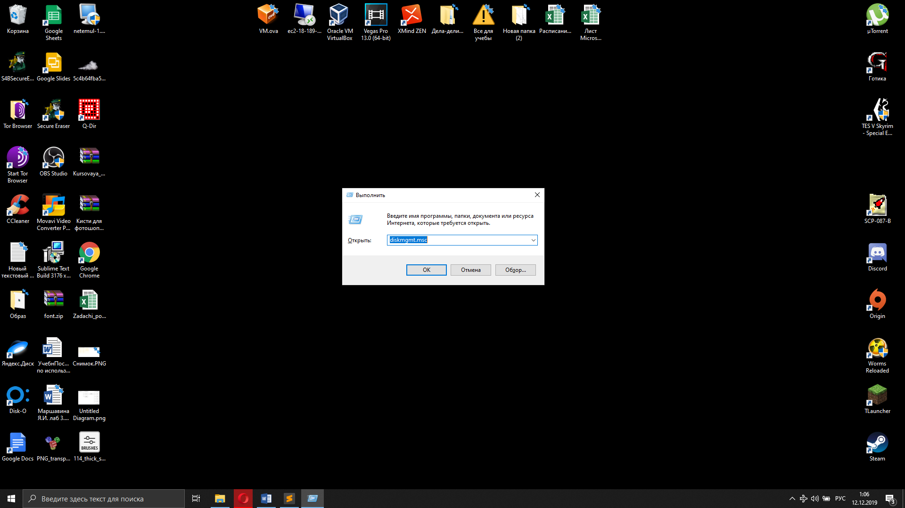
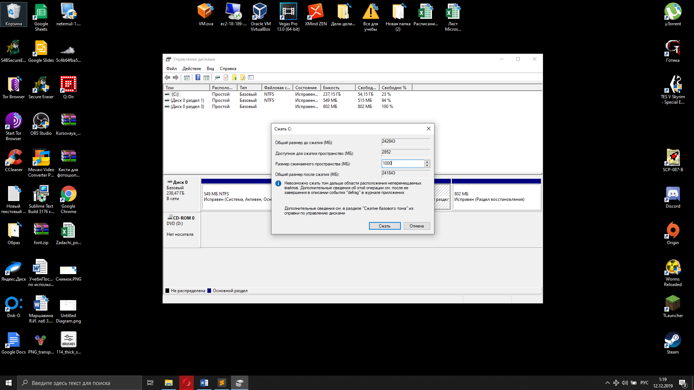
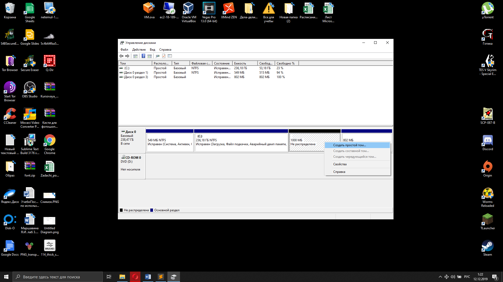
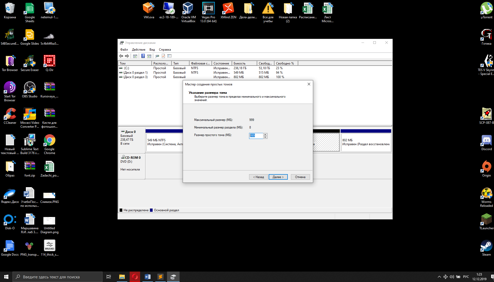
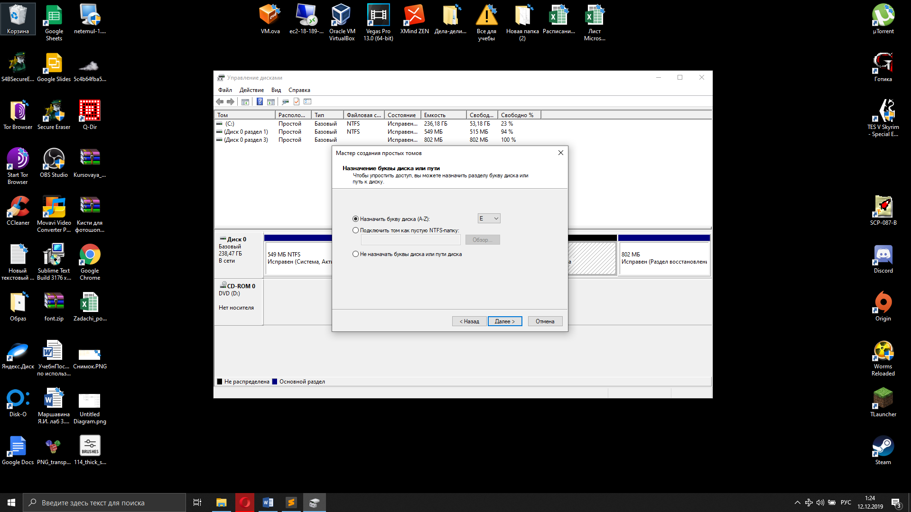
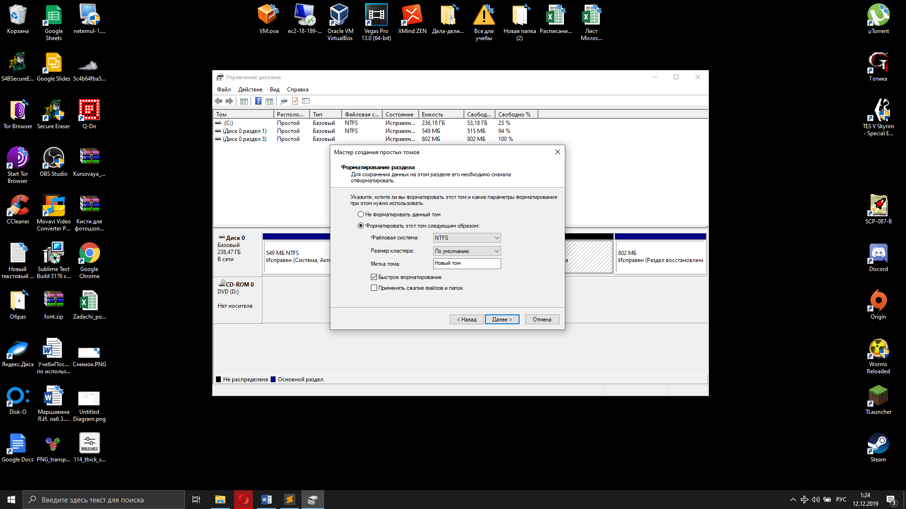
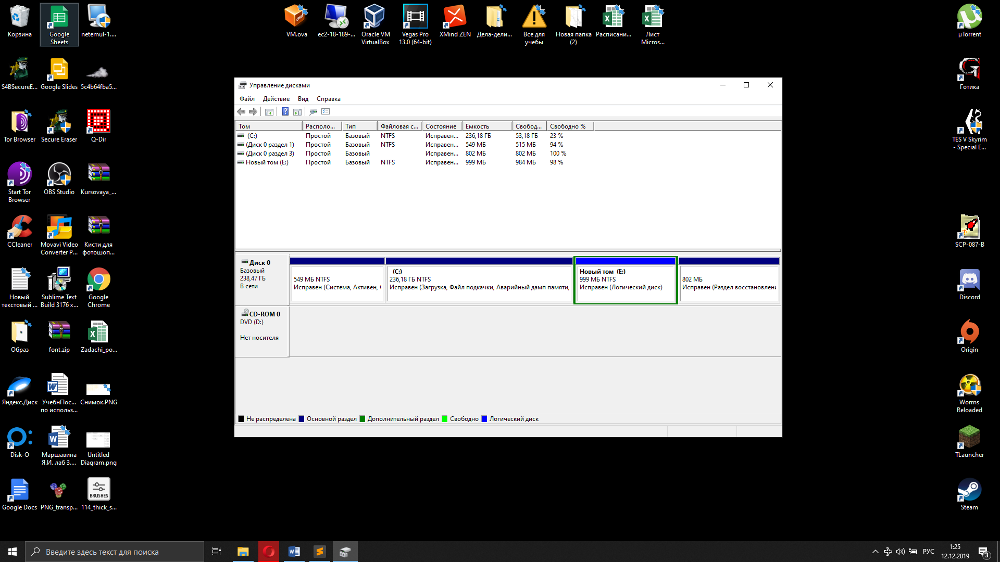
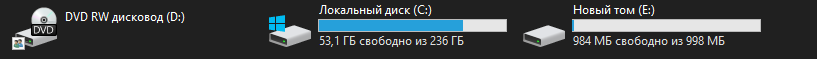

Разметка диска представляет из себя деление жесткого диска на области определенного размера.
Деление жесткого диска на разделы имеет ряд преимуществ. Во-первых, позволяет отделить системную область от пользовательской, что полезно с точки зрения безопасности файлов операционной системы. Во-вторых, разметка диска делает возможным создание разделов по назначениям. В-третьих, повышает быстродействие системы за счет возможности выбора для каждого раздела наиболее оптимального типа файловой системы и, соответственно, размера логической единицы – кластера.
Разметку диска можно сделать как с помощью стороннего программного обеспечения, так и с помощью средств Windows.
Для того, чтобы начать разбивку диска средствами операционной системы, нужно запустить диспетчер дисков путем нажатия сочетания клавиш Win+R
Управление дисками. Главное окно.
Выбираем диск и с помощью вызова контекстного меню выбирает операцию сжатия тома. После этого начнется определение доступного для сжатия места.
Далее выбираем размер сжимаемого пространства и нажимаем кнопку "сжать"
Выбираем создание нового тома.
Указываем размер тома.
Выбираем букву для диска.
Далее переходим к выбору файловой системы, размера кластера и метки тома. Оставляем настройки по умолчанию: файловая система – NTFS, размер кластера – по умолчанию, метка тома –"Новый том".
Новый созданный том:
Результат:
